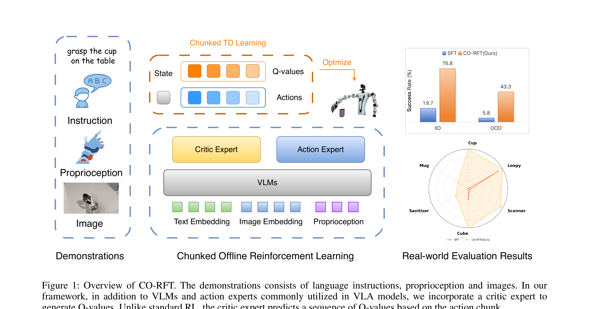

CO-RFT: Efficient Fine-Tuning of Vision-Language-Action Models through Chunked Offline Reinforcement Learning
Huang 等 · 2025 · arXiv:2508.02219 · Zotero 5F97K7YX
CO-RFT 直接把 VLA 的 action chunk 当 RL 决策单元，扩展 TD 学习去处理块内信用分配，用几十条演示完成离线微调。
§1 Introduction：action chunk 为什么改变了离线 RL 的 Bellman 时间尺度
现代 VLA 为平滑与实时性一次输出 $H$ 步 action chunk，但标准离线 RL 的 critic 接收单个 Markov action，并在一步后 bootstrap。把整个 chunk 当一个宏动作会丢失块内奖励与终止位置；把每个原子动作单独训练又与策略实际条件不一致，因为后续动作在同一 chunk 内一次生成。
CO-RFT 先用约几十条 demonstration 全参 imitation finetune，让 VLM backbone 适配机器人；再用 Chunked RL critic 同时读取状态和整段 action，输出 chunk 内每个位置的 Q。shifted/n-step TD 将奖励沿块内时间传播，并在块边界 bootstrap，actor 通过离线 RL 改进同时受 BC/保守项限制。
展开原文 · 核心结构
“extends temporal-difference learning to incorporate action chunking”
§2 Related Work：CalQL、n-step return 与 chunk policy
IQL/CalQL 等处理离线 OOD action 与保守 value，n-step TD 减少长程 bootstrap 次数但提高方差。动作 chunk 在 imitation 中已很常见，部分 RL 工作把它当 temporal abstraction 或 transformer sequence；VLA 后训练却往往仍套单步 critic。
CO-RFT 让 critic 的时间索引与 VLA 输出接口一致，适合稀疏奖励和长程任务。它与 BORA 都关注 chunk credit，但 CO-RFT 是纯离线全参 fine-tuning；没有在线 residual 或人类介入，最终性能上限仍受静态数据 support 和 reward 标注质量约束。
§3 问题设定：SFT 到底漏掉了什么
VLA 预训练与 SFT 解决“从观测到动作的模仿”，但部署是闭环过程：动作会改变下一帧，错误会把策略带到演示没有覆盖的状态。普通一步 TD 与 VLA 一次输出多步动作的结构不匹配，导致样本效率和训练稳定性差。
VLA 一次预测长度 k 的 action chunk；critic 为每个块位置生成 Q/V，并用位置编码区分块内时间。
展开原文 · 核心主张
“extend temporal difference learning to incorporate action chunking”
§4 方法总览：反馈信号怎么走
上一节明确了状态、动作与反馈，现在沿论文原图追踪训练信号。重点不是背模块名，而是判断：哪部分保持预训练先验，哪部分真的被 RL 改写。

1. 30–60 条演示先做全参 IL 初始化
先用 30–60 条专家轨迹做全参 imitation learning，使 VLA 能产生基本可执行的 action chunk。这个初始化限定了离线 RL 的搜索范围，避免少数据 critic 从完全随机动作中推导价值。
输入是什么：已经采集的专家演示、机器人交互轨迹或评测样本。每条数据通常包含观测、动作，以及可能存在的奖励或下一状态。
这一步究竟做什么：先用 30–60 条专家轨迹做全参 imitation learning，使 VLA 能产生基本可执行的 action chunk。这个初始化限定了离线 RL 的搜索范围，避免少数据 critic 从完全随机动作中推导价值。
输出到哪里：经过本步骤处理、含义更明确的中间结果。这个结果会交给下一步“critic 同时编码图像、语言、本体状态”继续处理。
为什么不能省略：学习算法只能从它见过的经历中改进；这一步决定训练数据是否覆盖成功、失败和恢复状态。
2. critic 同时编码图像、语言、本体状态
critic 联合编码图像、指令和本体状态，输出针对整个动作块的价值。视觉说明物体关系，语言限定任务，本体状态决定当前可执行性；少任一项都可能把相同像素动作错误地视为等价。
输入是什么：来自上一步“30–60 条演示先做全参 IL 初始化”的产物：经过本步骤处理、含义更明确的中间结果。本步骤还会按论文设置读取当前条件、时间步或训练信号。
这一步究竟做什么：critic 联合编码图像、指令和本体状态，输出针对整个动作块的价值。视觉说明物体关系，语言限定任务，本体状态决定当前可执行性；少任一项都可能把相同像素动作错误地视为等价。
输出到哪里：一组比原始输入更紧凑的内部特征；它不是最终动作或画面。这个结果会交给下一步“对 action chunk 做块内 TD 传播”继续处理。
为什么不能省略：模型不能高效地直接在所有原始像素和长序列上推理；这一步把信息压成后续模块能处理、比较和复用的形式。
3. 对 action chunk 做块内 TD 传播
块内 TD 把后续状态回报传播到 chunk 内各时间步，而不是只给整块一个标签。这样能区分同一 chunk 中前半段正确、后半段碰撞的情况，并减少长动作块的粗糙信用分配。
输入是什么：来自上一步“critic 同时编码图像、语言、本体状态”的产物：一组比原始输入更紧凑的内部特征；它不是最终动作或画面。本步骤还会按论文设置读取当前条件、时间步或训练信号。
这一步究竟做什么：块内 TD 把后续状态回报传播到 chunk 内各时间步，而不是只给整块一个标签。这样能区分同一 chunk 中前半段正确、后半段碰撞的情况，并减少长动作块的粗糙信用分配。
输出到哪里：经过本步骤处理、含义更明确的中间结果。这个结果会交给下一步“离线策略改进后直接真机评估”继续处理。
为什么不能省略：它承担上下两步之间的接口；缺少它，前一步产生的信息无法以正确格式或正确含义传到下一步。
4. 离线策略改进后直接真机评估
策略改进完全在离线数据上完成，随后直接真机闭环评估。复现时必须检查新策略是否仍位于演示支持范围；否则纸面 Q 提升可能只是 critic 对 OOD 动作的过估计。
输入是什么：来自上一步“对 action chunk 做块内 TD 传播”的产物：经过本步骤处理、含义更明确的中间结果。本步骤还会按论文设置读取当前条件、时间步或训练信号。
这一步究竟做什么：策略改进完全在离线数据上完成，随后直接真机闭环评估。复现时必须检查新策略是否仍位于演示支持范围；否则纸面 Q 提升可能只是 critic 对 OOD 动作的过估计。
输出到哪里：一组诊断数值、分类结果或评测分数；它告诉后续模块当前结果哪里好、哪里需要修正。这是图中这条链路的最终产物，随后会进入真实执行、模型更新或指标评测。
为什么不能省略：没有统一诊断或评分，后续模块无法知道哪里出错，也无法公平比较两个模型是否真的进步。
§5 机制细拆：动作、价值与更新边界
上图给出了宏观流程，但真正决定训练是否稳定的是三个接口：动作以什么粒度出现、反馈怎样变成可学习信号、哪些参数允许被更新。
§6 目标函数：把直觉压缩成可检查的量
前一节说清了信号路径，这里把核心优化目标写成教学化公式。读公式时依次检查：回报影响谁、数据支持在哪里、预训练策略受到什么约束。
- $i$
- 动作块内部位置
- $y_{t,i}$
- 块内第 i 步 TD 目标
- $V$
- 由 critic 估计的后续价值
先全参 imitation learning 初始化视觉语言骨干与动作头，再做 chunked offline RL；actor 仍受行为克隆项约束。
§7 训练与评测：数字是在什么条件下得到的
只看最终成功率会隐藏数据预算、仿真/真机差异和基座强弱。本节把论文的实验对象与比较关系放回同一张表。
| 策略与动作 | VLA 一次预测长度 k 的 action chunk；critic 为每个块位置生成 Q/V，并用位置编码区分块内时间。 |
|---|---|
| 训练反馈 | 离线数据中的奖励和终止信号形成 shifted bootstrap，让价值从下一个 chunk 倒传到当前 chunk 内各原子动作。 |
| 更新方式 | 先全参 imitation learning 初始化视觉语言骨干与动作头，再做 chunked offline RL；actor 仍受行为克隆项约束。 |
| 实验覆盖 | 仅使用约 30–60 条专家演示，在多项真实机器人任务上报告成功率、周期时间和未见位置泛化。 |
| 关键对照 | 普通 TD3/IQL 把 chunk 当单动作会丢失块内信用；逐帧 RL 又不符合 VLA 的部署接口。CO-RFT 在两者之间做块内 TD。 |
§8 结果怎么读：证据、因果与可迁移结论
真实环境报告成功率提升 57%、周期时间下降 22.3%，未见位置成功率达到 44.3%。
普通 TD3/IQL 把 chunk 当单动作会丢失块内信用；逐帧 RL 又不符合 VLA 的部署接口。CO-RFT 在两者之间做块内 TD。
action chunk 不只是工程加速技巧，它改变了 RL 的时间尺度与信用分配。
§9 复现与工程检查
前一节判断了证据强度，复现时还要把训练信号对齐、时间尺度和数据统计逐项落地，否则“同名算法”也可能得到完全不同的结果。
- 检查 chunk 长度、padding mask 与终止位置；Q/V target 必须处理最后一格跨 chunk bootstrap；小数据结果需要多随机种子。
- 先跑通不加 RL 的预训练/SFT 基线，并保存逐任务成功率与失败视频。
- 同时记录环境步数、真实墙钟时间、人工介入次数、更新次数和推理延迟。
- 把奖励、终止、action chunk mask 与归一化统计做成可视化单元测试。
§10 适用边界与研究启发
极少数据使结果对演示覆盖度与奖励标注敏感；不是所有长 action chunk 都适合相同 bootstrap。
action chunk 不只是工程加速技巧，它改变了 RL 的时间尺度与信用分配。